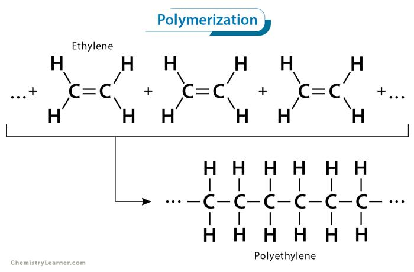

ปฏิกิริยาการเกิดพอลิเมอร์
ปฏิกิริยาการเกิดพอลิเมอร์ (Polymerization) คือ กระบวนการทางเคมีที่ทำให้มอนอเมอร์จำนวนมากเชื่อมต่อกันจนเกิดเป็นพอลิเมอร์ โดยสามารถแบ่งออกเป็น 2 ประเภทหลัก ได้แก่ ปฏิกิริยาแบบเติม และปฏิกิริยาแบบควบแน่น ซึ่งแต่ละประเภทมีกลไกการเกิดและลักษณะของผลิตภัณฑ์แตกต่างกัน ปฏิกิริยาแบบเติม (Addition Polymerization) เป็นปฏิกิริยาที่มอนอเมอร์ซึ่งมีพันธะคู่ระหว่างอะตอมคาร์บอนเกิดการเปิดพันธะคู่ แล้วเชื่อมต่อกับมอนอเมอร์หน่วยอื่น ๆ จนเกิดเป็นสายโซ่พอลิเมอร์ โดยทั่วไปไม่มีโมเลกุลขนาดเล็กหลุดออกมาเป็นผลพลอยได้ ตัวอย่างเช่น การเกิดพอลิเอทิลีนจากเอทิลีน (nCH2=CH2 → [-CH2-CH2-]n) ซึ่งพอลิเอทิลีนเป็นพลาสติกที่มีการใช้งานอย่างแพร่หลาย เช่น ถุงพลาสติก ฟิล์ม และภาชนะบรรจุสิ่งของ ปฏิกิริยาแบบควบแน่น (Condensation Polymerization) เป็นปฏิกิริยาที่มอนอเมอร์ซึ่งมีหมู่ฟังก์ชันที่สามารถทำปฏิกิริยากันได้เชื่อมต่อเป็นพอลิเมอร์ พร้อมกับมีโมเลกุลขนาดเล็ก เช่น น้ำ หรือไฮโดรเจนคลอไรด์ เกิดขึ้นเป็นผลพลอยได้ ตัวอย่างของพอลิเมอร์ที่เกิดจากปฏิกิริยาประเภทนี้ ได้แก่ ไนลอนและพอลิเอสเตอร์ เช่น การสังเคราะห์ไนลอน 6,6 จากเฮกซะเมทิลีนไดเอมีนและกรดอะดิปิก จะเกิดพันธะเอไมด์ระหว่างมอนอเมอร์และมีน้ำเกิดขึ้นเป็นผลพลอยได้